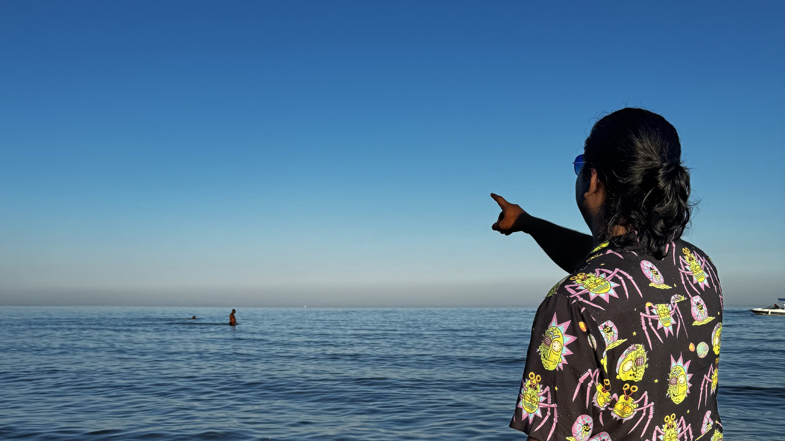

About Me

Yep, that's me again.
I'm a developer who likes to move fast and build things that feel alive. I jump into projects with the goal of making them smoother, sharper, and way more intuitive than they started. I love that moment when an idea turns into something you can click, touch, test, and break then rebuild into something even better.
I work with a mix of logic and instinct, pushing for clean structure but keeping enough flexibility to try ideas that don't exist yet. I'm always chasing that flow where the code lines up, the interface reacts instantly, and everything just clicks into place.
My Story
Interactive Media Design
Fanshawe College · London, Ontario - Learning full-stack web development, motion graphics, UI/UX, and digital media production.
Bachelor of Science - Game Development
Dove deep into HTML, CSS, JavaScript, and PHP independently. Built my first responsive websites and started exploring design systems.